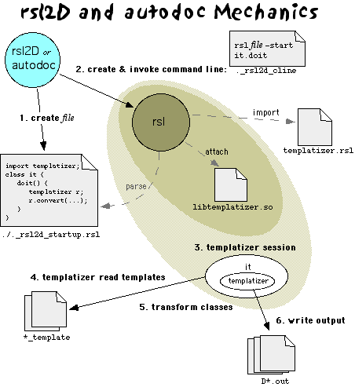

Destiny C++ | Overview | Reference
Class and Object Design | rsl2D | R_D | Sorting
rsl2D and autodoc are the same mechanism, with slightly different front-ends.
The real work is done by a foundation 2.5 Resource R_templatizer
in the templatizer package. This is the first apparent break from rsl2c++,
which required its own custom version of the granite core.
The autodoc command is a shell script:
autodoc kind file1 file2 ...
where kind is either c++ or rsl , and in contrast to rsl2D, one lists the actual file names on the command line. Currently, autodoc uses the 2.5a6.1 prototype version of foundation. The kind specifies which template directory to use.
autodoc writes its output in the form of one file per input, with ".rsl" replaced with ".html". If the kind requested in c++, however, the file will be prefixed with "D". Eg, "autodoc c++ A.rsl" will produce a file "DA.html", while "autodoc rsl A.rsl" will produce "A.html".
/usr/local/bin/rsl2D invokes a beta version of rsl2D, using a prototype version of Foundation 2.5. For example, given rsl classes A and B in the files A.rsl and B.rsl,
% rsl2D A B rsl2D BETA, build 5 Using templates in /dest/home/holtrf/dev/packages/rsl2cpp/templates/ file /dest/home/holtrf/dev/packages/rsl2cpp/tests/A.rsl file /dest/home/holtrf/dev/packages/rsl2cpp/tests/B.rsl Converting class A... Converting class B...
Arguments are the names of the classes, from which it presumes classname.rsl
as this examples shows. The output is one file for each input file, named by a ".out"
suffix, which will be post-processed into two files, probably (later). The details
of the output should not be relied upon at this time - it certainly won't compile.
The template files will be in flux. Processing notes appear at the top of the file.
This example section has not been updated for the rsl2D and autodoc releases that use 2.5a6.1 (Nov 23, 1998)
Note the use of the superclass in the class declarations and default route case, the init() and destroy() methods, data and method declarations, message-to-function calls in route(). If you are experienced with Foundation 2.2 Resources, these differences are great. Note also that the given templates are quite unfinished!
These examples are from Sept 10
| C++ (D) template file set, and result | autodoc template file set, and result |
| main_template | main_template |
| method_decl_template | method_decl_template |
| param_template | param_template |
| method_impl_template | method_impl_template |
| data_template | data_template |
| init_template | init_template |
| destroy_template | destroy_template |
| route_case_template | route_case_template |
| route_param_template | route_param_template |
| case_def_template | case_def_template |
rsl2D and autodoc use the R_Templatizer resource to merge information about the specified classes with template files on disk. They both create a simple rsl object to perform the specific templatization requested. Note that this means all the features of autodoc and rsl2D, and much more, can be done from within any rsl program; learn how to do this by studying the rsl class file that is generated by rsl2D and autodoc, called ._rsl2D_startup.rsl and ._autodoc_startup.rsl respectively. (for the new to Unix: the dot prefix in the filename means they are only visible via the -a option to ls)
Template files are grouped into template sets, according to the kind of output that is desired (eg, HTML, C++, etc). A template set is a directory of template files, according to the naming convention below. Currently there are nine template sets, and ten files in each for a total of 90 templates. The layout is currently subdivided beneath the directory $GRANITE/packages/templatizer/templates as:
These are template sets. autodoc uses the "html" directory; the html/c++/Composite template set is a set of files that document the c++ version of a class in html. When doing c++, R_templatizer uses several rules to automatically determine which specific set (of Composite, Collection, etc) to use - such as, for example,
rsl2D and autodoc rely on a collection of 10 template files that describe the structure of the output and where to place the details. The level of detail provided for by the templates allows rsl2D to serve not only for generation of D classes, but Foundation 2.2's autodoc and probably Java classes as well.
The templates and their valid substitution tags are below. Embedding indicates hierarchy, eg, method_decl_template refers to param_template for some of its structure. Additionally, any template can use tags that are defined above it as substitution happens from the inside out. For example, param_template could use both <METHOD_NAME> and <CLASSNAME>, since they are defined above.
|
main_template
|
rsl2D and autodoc are distributed about many different pieces, hidden behind shell
scripts named rsl2D and autodoc. Its real work, the heart
of the system is performed by the Resource R_templatizer, in the Foundation
2.5 package templatizer. The shell scripts create an rsl file that directs
the granite core to do the work by instantiating an R_templatizer and telling it
about all the classes it needs to process and what template directories it will use
as well as the filename extension to create for the output files.
The diagram below illustrates to great detail this process. The expanding colored rings around rsl indicate an expanding process space as time progresses.

diagram updated Dec 15, 1998